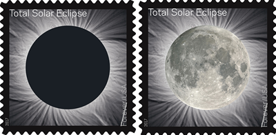
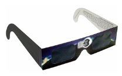

Flying to view the August 21, 2017 total solar eclipse
On this date there will be a total eclipse of the sun visible across the US in a narrow 70 mile band.

You've certainly seen lunar eclipses and may have seen a partial eclipse of the sun. But because total eclipses of the sun are so localized you have to almost always make a trip to see them. A particular spot on the Earth will see an eclipse every 400 years or so on average. The last time a total eclipse was viewable in the 48 contiguous U.S. was in 1979 and that was limited to a few states in the Northwest.
{kind=link}

This once in a lifetime event will likely generate crowds of travelers to view it. The post office has even released a commemorative stamp for this event. On the stamp you can see the Sun's corona and when you heat the stamp with your thumb it shows the moon being lit up from the Earth's glow.
The eclipse is expected to generate a lot of road traffic as people travel to see it. Local accommodations are likely to also run out in areas. However due to the need for a mostly clear sky and the vagaries of weather making fixed plans may not be advisable. Whereas flying to an airport to view the eclipse is ideal as you'll be able to find clear viewing weather and not have to worry about fighting traffic or find accommodations.
You may be tempted to view the eclipse from the air, perhaps even following the eclipse along its path to make it last longer. A Concorde flight did this in 1973 and managed to make the eclipse last 74 minutes. But because the eclipse is zipping across the ground at over 1600 MPH this will have little effect for most of us. Also it gets very dark, very quickly in the approach to totality. And during totality its about as dark as a full moon night. You'd be too busy in to cockpit flying the plane safely to enjoy the sights.

During the short period of totality (no more than about 2½ minutes) you will not need protective glasses to view the sun as the sun is of course being covered by the moon. For any other time you will need special eclipse glasses, even the darkest sun glasses or most welders goggles are not dark enough. NASA has put together a lot of useful information about eclipses and how to view them safely.
There is a great interactive map online that you can use to find out exactly when the total eclipse will start and how long it will last. Since it uses google maps the search bar will take airport IDs. For even more accurate and downloadable eclipse maps use NASA's that fully take into account the effect of elevation.
To quickly and easily find an airport to fly to with clear weather for viewing the eclipse consider using my app 'Weekend Flyer' detailed on this website. There is an option in settings to turn on a eclipse map overlay. Clear skies will show up as green circles on the forecast maps. Zooming in will show all public use airports. Press 'Introduction' or 'Demo Video' on the menu on the top of the page for more information.
| Copyright © 2017 | Thomas Court Software Development, LLC | All Rights Reserved |